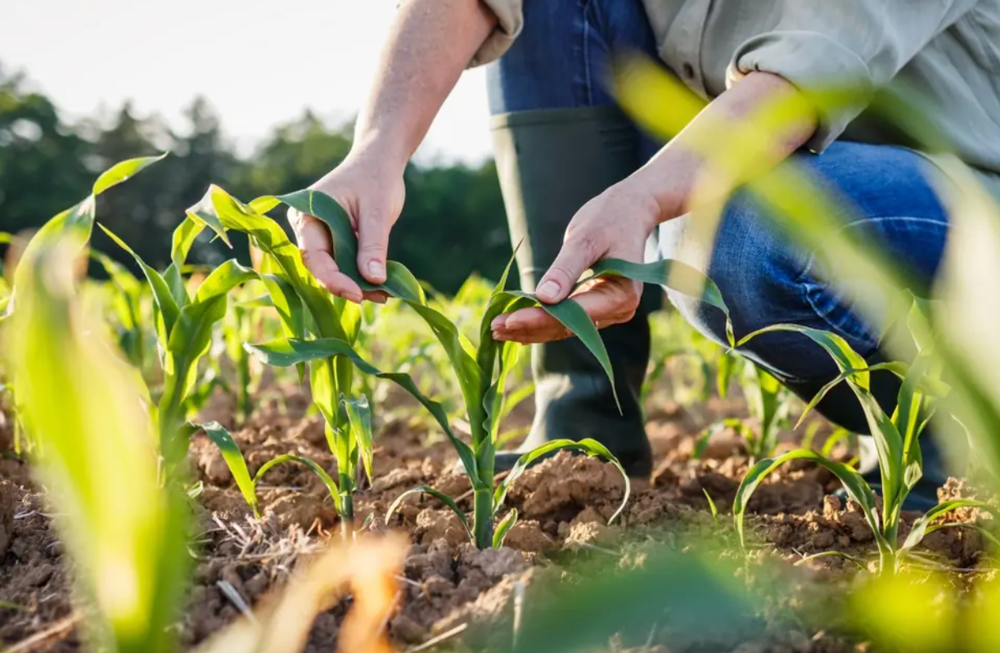
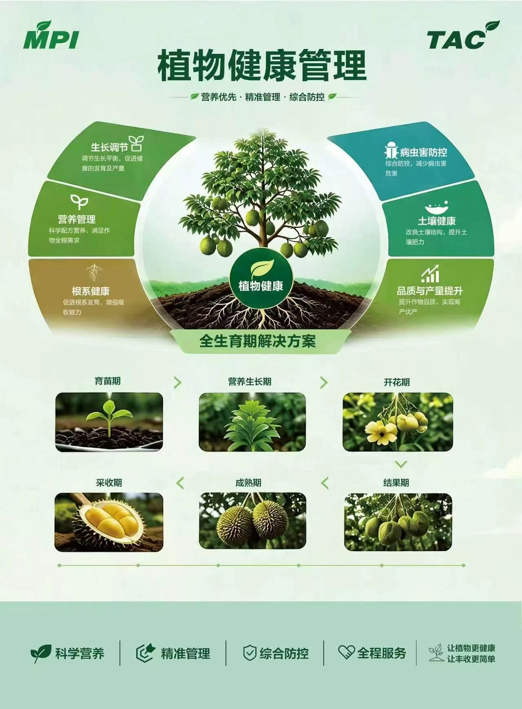
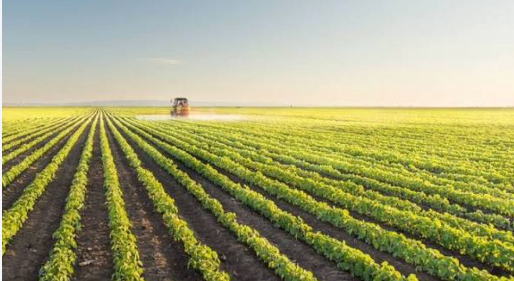

AGRICULTURE
01 / 04
从土壤到丰收的全程关怀
以植物健康为核心，从土壤、根系、营养、生长调节到病虫害防控，提供覆盖作物全生育期的综合解决方案。以精准植保支持作物自身抵抗力，服务高产、优质与可持续农业。
了解植物健康方案ABOUT TII
TRINITY INDUSTRIAL & INVESTMENT GROUP PTE. LTD. 在新加坡注册并设立总部，投资、建设和运营多元业务，为亚洲与南美洲的农业、医疗及工业客户提供产品与服务。
以贸易整合供应，以运输和仓储连接市场。让采购、分销与本地服务协同运作，更好地管理品质、成本和交付。
了解我们的全球布局
OUR BUSINESS
连接产业与市场，为客户创造持续价值。
01 / 04
以植物健康为核心，从土壤、根系、营养、生长调节到病虫害防控，提供覆盖作物全生育期的综合解决方案。以精准植保支持作物自身抵抗力，服务高产、优质与可持续农业。
了解植物健康方案02 / 04
服务医院、诊所、实验室和分销合作伙伴，围绕日常诊疗与专业医疗场景，提供医疗器械、耗材及诊断相关产品。
03 / 04
以新加坡为采购与分销枢纽，连接东南亚、南亚与南美洲。通过贸易网络整合产品与供应资源，为分销业务提供支持。

查看完整方案图PLANT HEALTH MANAGEMENT
从一粒种子到一季丰收，以营养优先、精准管理、综合防控，关注每一个生长阶段。
改善土壤结构与肥力
促进根系发育与吸收
匹配作物全程营养需求
调节生长平衡与发育
综合防控，减少病虫害
关注品质，支持优质生产

CONNECTING INNOVATION.
ENRICHING LIFE.
OUR CULTURE
立信笃行，创新发展，为客户创造价值，为社会创造可持续未来。
建立长期品牌与客户关系。
持续优化产品、方案和服务。
以诚信作为经营的基础。
关注客户成果，帮助农民提高收益。
GLOBAL PRESENCE
从亚洲到南美洲，让产业连接更近一步。
CONTACT US
联系人 · Mr. Chu
Tongchaleunagro@163.com